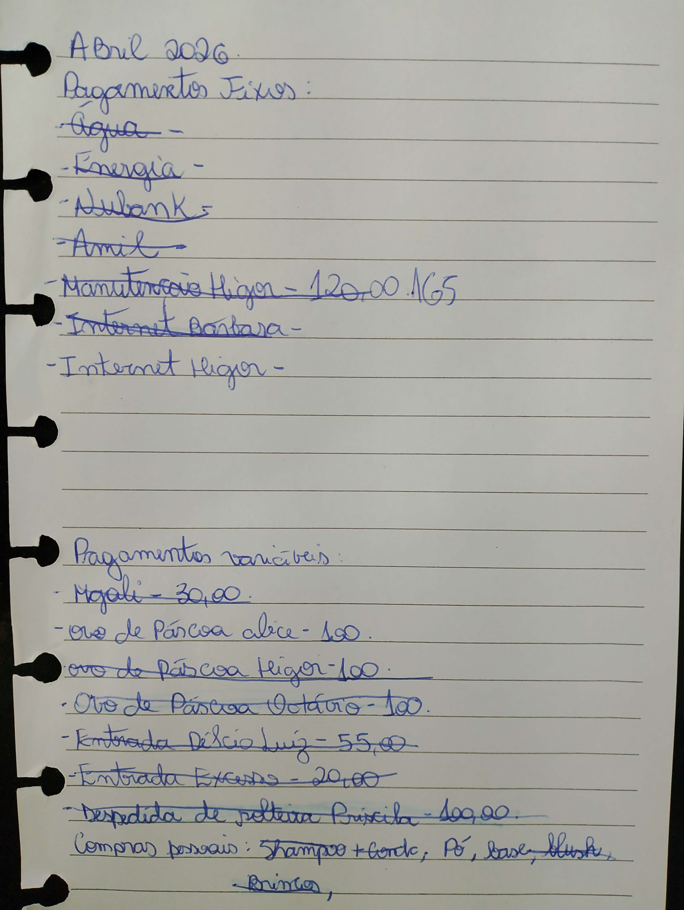

| Tipo / Elemento Analisado | Traços Comportamentais Mapeados | Códigos de Validação | Interpretação do Bloco |
|---|---|---|---|
| MS Equilibrada | Estabilidade (0), Maturidade (1) | P21 | Indica respeito adequado às hierarquias, boa postura formal e introdução equilibrada em novos ambientes. |
| ME Regular Equilibrada | Temperança (0), Elevação (11) | P12 | Mostra boa gestão do passado, equilíbrio nos gastos e conduta polida. |
| MD Inanalisável | - | N/A | Margem sem padrão claro ou sem constância suficiente para pontuação definitiva. |
| Disciplinada | Seriedade (0), Organização (2), Economia (4), Precisão (4), Disciplina (4), Perseverança (5) | P2 P6 P7 P12 | Forte senso de responsabilidade, cumprimento rigoroso de regras e foco operacional. |
| Constante | Disciplina (4), Perseverança (5) | P9 P21 | Estabilidade de propósitos. Mantém o ritmo de entrega sob obstáculos prolongados. |
| Agrupada Evoluída | Reflexão (0), Moderação (0), Compreensão (1), Intuição (12) | P8 P26 | Letras conectadas em blocos lógicos pequenos. Equilíbrio entre razão analítica e intuição prática. |
| Média | Autocontrole (0), Equilíbrio (0), Moderação (0), Estabilidade (0), Coerência (1), Adaptação (3) | P20 P21 P24 P26 | Senso de realidade apurado. Sabe dosar a introversão e a extroversão no ambiente. |
| Retilínea | Moderação (0), Autocontrole (0), Estabilidade (0), Equilíbrio (0), Clareza (1), Dedução (12) | P6 P20 P24 P26 | Linhas horizontais firmes. Traduz estabilidade de humor e previsibilidade de comportamento. |
| Horizontal | Autocontrole (0), Equilíbrio (0), Estabilidade (0), Concentração (1) | P18 P24 | Reforça a resistência a pressões externas e foco nos objetivos reais. |
| Perpendicular | Moderação (0), Seriedade (0), Responsabilidade (0), Maturidade (1) | P8 P18 | Escrita vertical (90°). Aponta para o império absoluto da razão sobre o impulso. |
| Cursiva | Sensatez (0) | P8 P20 | Espontaneidade e inteligência prática diante de cenários rotineiros. |
| Normal | Moderação (0), Equilíbrio (0), Lucidez (1), Coerência (1), Sinceridade (11), Tolerância (11) | P20 P21 P26 P27 N22 | Equilíbrio geral e conduta transparente. O vetor N22 pontua que a forte franqueza pode se traduzir em rigidez defensiva sob contrariedade. |
| Calma | Temperança (0), Moderação (0), Responsabilidade (0), Análise (1), Coerência (1), Conciliação (1), Conformismo (8), Sensibilidade (11) | P5 P8 P20 P21 P23 | Ritmo ponderado. Indica mente reflexiva e perfil pacificador, com leve risco de passividade pelo traço (8). |
| Cadenciado | Segurança (0), Planejamento (2), Iniciativa (2), Articulação (2), Síntese (2), Atividade (4), Motivação (4), Objetividade (4) | P1 P2 P6 P8 P13 P14 P25 P26 | Escrita rítmica. Excelente capacidade de organização mental e dinamismo produtivo. |